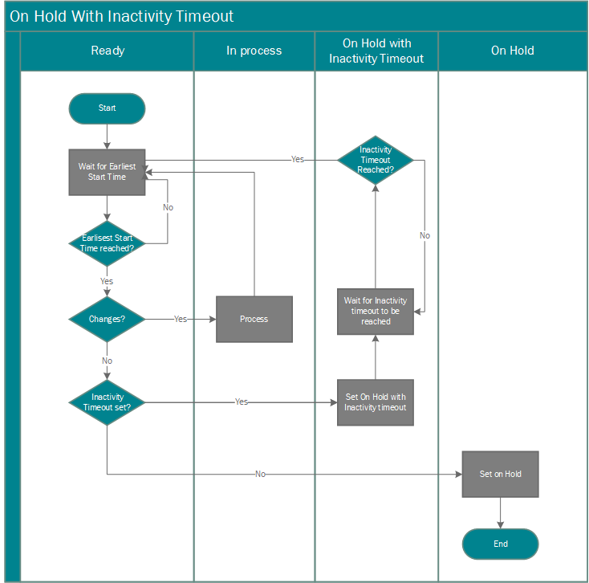

Scheduling a Synchronization between Business Central and Common Data Service
You can synchronize Business Central with Common Data Service on scheduled intervals by setting up jobs in the job queue. The synchronization jobs synchronize data in Business Central records and Common Data Service records that have been previously coupled together. Or for records that are not already coupled, depending on the synchronization direction and rules, the synchronization jobs can create and couple new records in the destination system.
There are several synchronization jobs that are available out-of-the-box. The jobs are run in the following order to avoid coupling dependencies between entities. For more information, see Use Job Queues to Schedule Tasks.
- CURRENCY - Common Data Service synchronization job.
- VENDOR - Common Data Service synchronization job.
- CONTACT - Common Data Service synchronization job.
- CUSTOMER - Common Data Service synchronization job.
- SALESPEOPLE - Common Data Service synchronization job.
You can view the jobs on the Job Queue Entries page. For more information, see Use Job Queues to Schedule Tasks.
Default Synchronization Job Queue Entries
The following table describes the default synchronization jobs for Common Data Service.
| Job Queue Entry | Description | Direction | Integration Table Mapping | Default Synchronization Frequency (mins) | Default inactivity sleep time (mins) |
|---|---|---|---|---|---|
| CONTACT - Common Data Service synchronization job | Synchronizes Common Data Service contacts with Business Central contacts. | Bidirectional | CONTACT | 30 | 720 (12 hours) |
| CURRENCY - Common Data Service synchronization job | Synchronizes Common Data Service transaction currencies with Business Central currencies. | From Business Central to Common Data Service | CURRENCY | 30 | 720 (12 hrs) |
| CUSTOMER - Common Data Service synchronization job | Synchronizes Common Data Service accounts with Business Central customers. | Bidirectional | CUSTOMER | 30 | 720 (12 hrs) |
| VENDOR - Common Data Service synchronization job | Synchronizes Common Data Service accounts with Business Central customers. | Bidirectional | VENDOR | 30 | 720 (12 hrs) |
| SALESPEOPLE - Common Data Service synchronization job | Synchronizes Business Central salespeople with Common Data Service users. | From Common Data Service to Business Central | SALESPEOPLE | 30 | 1440 (24 hrs) |
Synchronization Process
Each synchronization job queue entry uses a specific integration table mapping that specifies which Business Central table and Common Data Service entity to synchronize. The table mappings also include some settings that control which records in the Business Central table and Common Data Service entity to synchronize.
To synchronize data, Common Data Service entity records must be coupled to Business Central records. For example, a Business Central customer must be coupled to a Common Data Service account. You can set up couplings manually, before running the synchronization jobs, or let the synchronization jobs set up couplings automatically. The following list describes how data is synchronized between Common Data Service and Business Central when you are using the synchronization job queue entries. For more information, see Couple and Synchronize Records Manually.
The Sync. Only Coupled Records check box controls whether new records are created when you synchronize. By default, the check box is selected, which means that only records that are coupled will be synchronized. In the integration table mapping, you can change the table mapping between a Common Data Service entity and a Business Central table so that the integration synchronization jobs will create new records in the destination database for each record in the source database that is not coupled. For more information, see Creating New Records.
Example If you clear the Sync. Only Coupled Records check box, when you synchronize customers in Business Central with accounts in Common Data Service, a new account is created for each customer in Business Central and automatically coupled. Additionally, because the synchronization is bidirectional in this case, a new customer is created and coupled for each Common Data Service account that is not already coupled.
Note
There are rules and filters that determine what data is synchronized. For more information, see Synchronization Rules.
When new records are created in Business Central, the records use the either the template that is defined for the integration table mapping or the default template that is available for the record type. Fields are populated with data from Business Central or Common Data Service depending on the synchronization direction. For more information, see Modify Table Mappings for Synchronization.
With subsequent synchronizations, only records that have been modified or added after the last successful synchronization job for the entity will be updated.
New records in Common Data Service are added in Business Central. If data in fields in Common Data Service records has changed, the data is copied to the corresponding field in Business Central.
With bidirectional synchronization, the job synchronizes from Business Central to Common Data Service, and then from Common Data Service to Business Central.
About Inactivity Timeouts
Some job queue entries, such as those that schedule synchronization between Business Central and Common Data Service, use the Inactivity Timeout field on the Job Queue Entry card to prevent the job queue entry from running unnecessarily.

When the value in this field is not zero, and the job queue did not find any changes during the last run, Business Central puts the job queue entry on hold. When that happens, the Status of Job Queue field will show On Hold Due to Inactivity, and Business Central will wait for the period of time specified in Inactivity Timeout field before it runs the job queue entry again.
For example, by default, the CURRENCY job queue entry, which synchronizes currencies in Common Data Service with exchange rates in Business Central, will look for changes to exchange rates every 30 minutes. If no changes are found, Business Central puts the CURRENCY job queue entry on hold for 720 minutes (six hours). If an exchange rate is changed in Business Central while the job queue entry is on hold, Business Central will automatically reactivate the job queue entry and restart the job queue.
Note
Business Central will automatically activate job queue entries that are on hold only when changes happen in Business Central. Changes in Common Data Service will not activate job queue entries.
To view the synchronization job log
Choose the
 icon, enter Integration Synchronization Log, and then choose the related link.
icon, enter Integration Synchronization Log, and then choose the related link.If one or more error occurred for a synchronization job, the number of errors appears in the Failed column. To view the errors for the job, choose the number.
Tip
You can view all synchronization job errors by opening the synchronization job error log directly.
To view the synchronization job log from the table mappings
- Choose the icon, enter Integration Table Mappings, and then choose the related link.
- In the Integration Table Mappings page, select an entry, and then choose Integration Synch. Job Log.
To view the synchronization error log
- Choose the icon, enter Integration Synchronization Errors, and then choose the related link.
See Also
Synchronizing Data in Business Central and Common Data Service
Manually Synchronize Table Mappings
Scheduling a Synchronization between Business Central and Common Data Service
About Integrating Dynamics 365 Business Central with Common Data Service